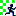
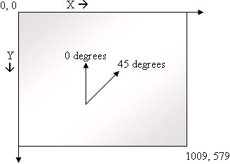

CodeRally gives you the opportunity to pit your Java programming skills against other teams in a world of car rally racing. Each team will write a Java class which represents and controls a RallyCar. Your car (class) will be placed on a simulated race track along with cars from other teams.
Rally cars can move around on a track and obtain important information such as the location of various objects on the track and the current capabilities of other cars. Cars can collide with other cars, throw spare tires to distract other cars, and they can enter a protected mode to (temporarily) protect themselves from being hurt by other cars.
The rally pits cars against each other in a series of matches. A match consists of up to six cars competing with each other. Each car starts a match positioned in a random location and facing a random direction on a finite two-dimensional grid, with the same amount of fuel and spare tires as the other cars. Driving around the track uses fuel. The track contains places where cars can go to get additional fuel and different places they can go to pick up spare tires. If a car runs out of fuel it can no longer move, so it is important to constantly check your fuel and refuel if necessary.
During each match, a car can accumulate “points.” Cars can earn points in four ways: by successfully throwing a spare tire at another car, by passing checkpoints in order or out of order around the track, and by the amount of fuel remaining at the end of a match. Cars with the highest point totals from each match advance to subsequent rounds.
The rest of this guide shows how to create a car and how to invoke its various capabilities. You should work now to understand the code structure that your car must implement, and discuss the strategy for your car to use during the game. It is permissible for players to openly discuss code structure and strategy during this time.
The coding part of the CodeRally starts when you get access to your machine. You will use the Eclipse development environment to create and test your car. You must use Eclipse to develop your car code, since the simulated track runs under Eclipse.
You can test your car during the coding phase in two ways. First, there will be a private version of the track environment on your machine. The private track contains a collection of sample cars with various capabilities (but no cars from other teams). You may run your car on this private track to see how it performs. Only you will be able to see the results of running your car on the private track.
The second way to test a car is to submit it to the public CodeRally track. When you submit your car to the public track, you will obtain a snapshot on your machine of all other cars that have been submitted up to that point in time. You will be able to run a public version of the CodeRally track to watch the performance of your car against other player's submitted cars (and vice versa).
The performance of your car on the public track during the coding phase does not count. It is strictly an opportunity for you to see how your car performs against other player's cars in order to consider making changes.
It is not a requirement to submit your car to the public track during coding phase. However, all teams must submit their final cars prior to the end of the coding phase to be included in the final tournament.
The final versions of all cars (the last submission you make) will compete in a tournament which will take place [**]. The cars will initially be grouped randomly into matches with up to five other cars. After each round, cars will be regrouped according to the points they accumulate and a new round will begin.
All cars will compete in at least three rounds. After that, eliminations will take place based on points and a new series of rounds will begin. Each car will start each new series of rounds with zero points and random regrouping. The winning car will be will be the player whose car earns the most points in the final tournament round.
The remainder of this guide is intended to help you understand how to design and implement your car. JavaDoc files are also available, describing the classes and interfaces that relate to coding your car.
When you start Eclipse on your machine and open the CodeRally project, you will find a skeleton for the class RallyCar.java. This is the class that will contain the code making up your car. You may add fields and declare additional methods, as well as create other Java classes.
The RallyCar class contains stubs for certain methods required in cars; you will have to fill in the code in these methods. Modifying these methods is the primary manner in which you create the “personality” of your car. You may also add other fields and methods to the RallyCar class to further define its characteristics.
When you have a version of the RallyCar class that you wish to test in the private track, save your RallyCar code and then click the “Run the private track” button on the Eclipse toolbar, which has the following icon: (Note: this icon has a red checkered flag in it; don’t confuse it with the other similar icon which has a green checkered flag.) If you are not sure about the function of an icon, move the mouse over it to see a ToolTip display of its function.
When you wish to submit your RallyCar to the public track, save your code and click the “Submit the code” button on the Eclipse toolbar, which has the following icon .
Once you have submitted your car to the public track, you can run your car in the public track and view its performance against other submitted cars. To run the public track, click the “Run the public track” button, which has the following icon:  (Note: this icon has a green checkered flag in it; don’t confuse it with the other similar icon which has a red checkered flag.)
The class Car.java is the superclass of RallyCar. It defines a number of methods that are inherited by RallyCar. These methods can be extremely useful in controlling your car.
You should not modify anything in the Car class. In fact, when you run your car, it will actually run with a different version of the Car class from the one you see in your environment. In particular, the Car class you will see contains some dummy initialization and return value code that will be replaced when you run in the private or public track.
In addition to the above classes, your environment will contain three Java interfaces that define the interfaces presented by various components of the track:
This is the interface of all objects in the simulated track. Every object implements this interface, which declares methods getX() and getY() that return the location of the object on the track. All track coordinates are non-negative values of type double.
This interface extends IObject and defines the interface of all spare tires that are currently active in the simulated track. Every spare tire implements this interface, which declares methods getHeading() and getSpeed(). Thus every spare tire contains methods that allow cars to determine important characteristics of the spare tire as the tire moves across the track.
This interface extends IObject and defines the interface for all cars on the simulated track. Thus it defines methods your car can invoke either on itself or on an opponent’s car. These methods are described in further detail below and in the JavaDocs for the CodeRally environment.
There are three method stubs in the RallyCar class that your team must fill in to identify your car. The first is getSchoolName(), which must return a string of no more than 25 characters giving the name of your School or University. Cars that do not assign their school name in getSchoolName() will not be allowed to compete in the tournament.
The second required identification method is getName(), which must return a string of no more than 25 characters assigning a name to your car. You may choose any name you wish for your car, but inappropriate names may be modified or the car may be eliminated.
The third identification method is getColor(), which must return a byte constant chosen from the predefined car colors given in the Car class. You can use this method to assign a color to your car, which determines its appearance in the graphical display of the CodeRally environment. The default value returned by getColor() is CAR_BLUE.
The identification methods must not do any computations other than returning the specified constant values.
When your car is placed into a track, the simulator invokes the initialize() method in your car. Put any initialization code you want to have executed into this method. You may make use of the entire API at this time. Be aware that the simulator will provide only a limited amount of time (1 second) for your initialization code to execute before it begins the game. If your initialization code fails to complete within the time limit, your car will enter the track in an uninitialized state, with unpredictable results.
Once the simulator finishes its timed calls to each car’s initialize() routine, it calls the move() method in each car in sequential order. This happens once every clock tick. The code in your car’s move() method determines what actions it takes during the course of a game. In addition to the input parameters to move(), which give some status information, methods are available to your car to query its own status, to change variables such as the desired direction and speed at which it should move, to query the status of other cars, to find the location of objects on the track (for example, the gas stations which can be used to refuel or places where you can pick up spare tires), and to throw spare tires from your car.
move() has four parameters that provide information about what happened during the previous movement cycle. These parameters specify (1) how much time (in milliseconds) your move() method used the previous time it was called; (2) whether your car hit a wall during the previous cycle, (3) whether your car collided with another car during the previous cycle, and (4) whether your car was hit by a spare tire from another car during the previous cycle. The first parameter is an int, the second is a boolean, the third and fourth parameters are an ICar reference to the corresponding car (or null, if no collision or hit occurred). The first parameter is useful in determining whether your car is in danger of exceeding the maximum amount of time allowed to complete a move.
A CodeRally track is a two-dimensional world of 1010 units in X by 580 units in Y, with the origin in the top left corner. There is a wall around the outside edge of the track, and cars cannot go beyond the wall. There are no walls on the interior of the world. Cars can move freely about the world, unless they bump into another car. Objects move in directions called headings, which are measured in integer degrees. Zero degrees is “straight up”. All headings are positive numbers in the range 0..359 and increase in the clockwise direction.
The figure below describes the world:
The world has the following characteristics:
| Action | Points Earned |
| Passing any checkpoint | 2 |
| Passing a checkpoint in successive order | 6 |
| Hitting another car with a spare tire | 10 |
| For each 10 units of fuel left after a match | 1 |
The following code snippets show simple examples of various operations which might be used inside a move() method. Note that these are separate code snippets, not a single complete move() method. Note also that these are only examples, intended to give you an idea of how to do things within your car. Winning cars will undoubtedly utilize sophisticated strategies which take full advantage of the range of method calls available to them.
The list of methods available to cars is documented in the JavaDoc descriptions of the classes and interfaces of the CodeRally environment. The primary challenge in the CodeRally is for you to decide on a strategy which uses the available methods to optimum advantage for your car.
/**
* Go toward the first spare tire depot.
*/
public void move(int lastMoveTime, boolean hitWall, ICar collidedWithCar, ICar hitBySpareTire) {
// pick a spare tire depot
IObject st = getSpareTireDepot()[0];
// go toward the checkpoint
int h = getHeadingTo(st);
if (getHeading() > h)
setSteeringSetting(MAX_STEER_LEFT);
else
setSteeringSetting(MAX_STEER_RIGHT);
setThrottle(MAX_THROTTLE);
}
/**
* Put the car in reverse for a few moves if you collide with another car.
*/
protected int wait;
public void move(int lastMoveTime, boolean hitWall, ICar collidedWithCar, ICar hitBySpareTire) {
if (collidedWithCar != null)
wait = 10;
if (wait > 0)
setThrottle(MIN_THROTTLE);
else
setThrottle(MAX_THROTTLE);
if (wait > 0)
wait--;
}